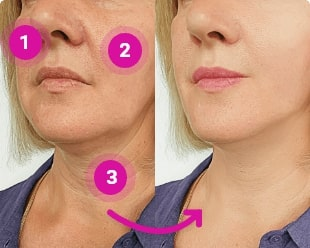
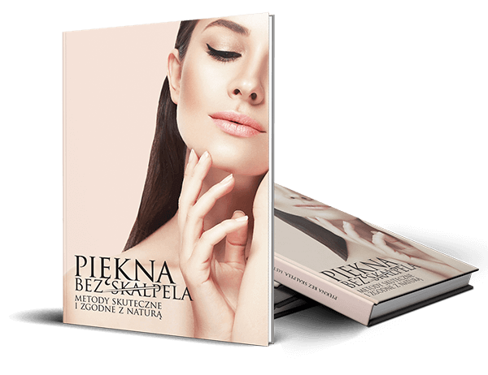

Witaj,
Nazywam się Elżbieta Voel-Janssen i jako ekspert ds. medycyny
estetycznej od ponad 15 lat pomagam kobietom likwidować oznaki
starzenia i przywracać ich twarzom młodzieńczy wygląd. Zdobyte
doświadczenie utwierdziło mnie w przekonaniu, że zabiegi z
użyciem skalpela i laserów nie dość, że są ryzykowne, to
wymagają częstszych działań, które czynią z twarzy karykaturę.
Jako naukowiec potwierdzam, że to
odpowiednia pielęgnacja skóry
jest kluczowym elementem wpływającym na jej późniejszy wygląd.
Zamiast wydawać krocie na drogie kremy, które nie działają,
proponuję Ci coś innego – przełomowy produkt do skóry twarzy,
nad którym pracowałam od wielu lat i który czerpie z natury, a
więc jest w 100% bezpieczny w stosowaniu. Co więcej,
usuwa najgłębsze zmarszczki nawet w ciągu 2 tygodni! Badania
potwierdzają, że ten produkt daje realne rezultaty i odmładza
nawet o 20 lat. A więc mając np. 50 lat, możesz wyglądać na
30!
Jestem przekonana o tym, co mówię, bo przeprowadziłam wiele
testów i
tylko ten produkt zadziałał w tak krótkim czasie, dając
efekt naturalnego botoksu - bez konieczności ingerowania w
ciało i wydawania kroci na drogie zabiegi.
Nazywam się Elżbieta Voel-Janssen i jako ekspert ds. medycyny
estetycznej od ponad 15 lat pomagam kobietom likwidować oznaki
starzenia i przywracać ich twarzom atrakcyjny, młodzieńczy
wygląd. Zdobyte na przestrzeni lat doświadczenie utwierdziło
mnie w przekonaniu, że wszelkie zabiegi z użyciem skalpela i
laserów nie załatwiają sprawy – nie dość, że są ryzykowne, to
wymagają coraz to częstszych działań, które czynią z twarzy
karykaturę. Jako naukowiec stwierdzam z pełnym przekonaniem, że
to
odpowiednia pielęgnacja skóry
jest kluczowym elementem wpływającym na jej późniejszy wygląd.
Jednak zamiast wydawać krocie na drogie kremy, które nie
działają, pragnę zaproponować Ci coś innego – przełomowy produkt
do skóry twarzy, nad którym pracowałam od wielu lat i który w
pełni czerpie
z natury, a więc jest w pełni bezpieczny w stosowaniu. Co
więcej,
usuwa najgłębsze zmarszczki nawet w ciągu 2 tygodni! Mogę ze
stuprocentową pewnością stwierdzić, że ten produkt daje realne
rezultaty i odmładza nawet o 20 lat. A więc mając np. 50 lat,
możesz wyglądać na 30!
Jestem w pełni przekonana o tym, co mówię, bo przeprowadziłam
wiele testów i
tylko ten produkt zadziałał w tak krótkim czasie, dając
efekt naturalnego botoksu - bez konieczności ingerowania w
ciało i wydawania kroci na drogie zabiegi.
Formuła ta pozwala w sposób nieinwazyjny:
-
wygładzić
najgłębsze bruzdy i zapobiec powstawaniu kolejnych - nawet w
ciągu
2 tygodni
-
zatrzymać
proces wiotczenia skóry i przywrócić jej
100%
jędrności
-
wyeliminować
zmarszczki mimiczne i kurze łapki – nawet w ciągu
7 dni
-
usunąć
worki pod oczami – w
80-90%
, nawet, jeśli odziedziczyłaś je w genach
-
poprawić
owal twarzy – w ten sposób Twoja twarz będzie smuklejsza
-
nawodnić, dotlenić i nawilżyć
skórę
Odkąd metoda ta stała się dostępna w Polsce, zgłaszają się do mnie
dziesiątki kobiet, które pozbyły się głębokich zmarszczek wokół
oczu, kurzych łapek, podłużnych linii na czole, zmarszczek palacza
i worków pod oczami. Co więcej, mówią, że zniknęła im nawet
obwisła skóra na szyi!
Muszę powiedzieć, że odkąd metoda ta stała się dostępna w Polsce,
zgłaszają się do mnie dziesiątki kobiet, które pozbyły się
głębokich zmarszczek wokół oczu, kurzych łapek, podłużnych linii
na czole, zmarszczek palacza i worków pod oczami. Co więcej,
mówią, że zniknęła im nawet obwisła skóra na szyi!
To wszystko jest możliwe dlatego, że metoda, o której mówię,
działa na 3 płaszczyznach równocześnie:

Ekspresowo spłyca zmarszczki i poprawia jędrność skóry
Substancje czynne natychmiastowo maksymalizują swoje
działanie i przenikając do najgłębszych warstw skóry
spłycają napotkane po drodze linie, bruzdy, zwiotczenia
i pajączki, czyniąc skórę jędrną i sprężystą.
To potężna formuła, doskonale zastępująca ryzykowny
botoks. Dzięki niej skóra staje się gładka, promienna i
doskonale napięta.
Po nałożeniu substancje czynne natychmiastowo
maksymalizują swoje działanie i przenikając do
najgłębszych warstw skóry
spłycają napotkane po drodze linie, bruzdy, zwiotczenia
i pajączki, czyniąc skórę jędrną i sprężystą
. To naprawdę potężna formuła, która doskonale zastępuje
ryzykowny botoks. Dzięki niej skóra staje się gładka,
promienna i doskonale napięta.
Hamuje szkodliwe działanie wolnych rodników
ma silny potencjał antyoksydacyjny.
Po pierwsze, składniki aktywne po prostu „zmiatają” wolne
rodniki, naprawiając wyrządzone przez nie szkody. Po
drugie, zapobiegają tworzeniu się nowych. W ten sposób
skóra staje się oporna na proces starzenia i działanie
czynników zewnętrznych, jak np. zanieczyszczenia
środowiska czy działanie słońca.
ma niezwykle silny potencjał
antyoksydacyjny.
Co to oznacza? Po pierwsze, składniki aktywne po prostu
„zmiatają” wolne rodniki, naprawiając wyrządzone przez nie
szkody. Po drugie, zapobiegają tworzeniu się nowych. W ten
sposób skóra staje się odporna na proces starzenia się
skóry i działanie czynników zewnętrznych, takich, jak
zanieczyszczenia środowiska czy działanie słońca.
Przyspiesza cykl odnowy skóry
Testy wykazały, że
przyspiesza cykl regeneracji skóry nawet o
200%.
Standardowo cykl życia komórki wynosi 28 dni, a po upływie
25. roku życia wydłuża się, co oznacza, że skóra szybciej
traci sprężystość i blask. Regularne stosowanie stymuluje
skórę do szybkiej regeneracji – odnawiają się włókna
kolagenu, skóra zyskuje na gęstości oraz następuje
usuwanie toksyn. Efekt? Skóra odmłodzona nawet o 20 lat!
Przeprowadzone przeze mnie testy wykazały, że
przyspiesza cykl regeneracji skóry nawet o
200%
. Standardowo cykl życia komórki wynosi 28 dni, a po
upływie 25. roku życia wydłuża się, co oznacza, że skóra
szybciej traci sprężystość i blask. Regularne stosowanie
stymuluje skórę do szybkiej regeneracji – odnawiają się
włókna kolagenu, skóra zyskuje na gęstości oraz następuje
usuwanie toksyn. Efekt? Skóra odmłodzona nawet o 20 lat!
Efekt gładkiej, odmłodzonej skóry twarzy – na czym polega sekret
?
Starożytne, naturalne metody stosowane przez wielkich mędrców
pozostawiły po sobie spadek ogromnej wiedzy, docenianej przez
współczesną medycynę. Z drugiej strony mamy dostęp do najnowszej
technologii i innowacyjnych rozwiązań, które, w połączeniu ze
znanymi od tysięcy lat metodami, działają cuda.
Sekret tkwi w umiejętnym połączeniu natury z
innowacją oraz czerpaniem z doświadczeń najlepszych francuskich
laboratoriów kosmetycznych.
Starożytne, naturalne metody stosowane przez wielkich mędrców
pozostawiły po sobie spadek ogromnej wiedzy, skutecznej i
docenianej przez współczesną medycynę. Z drugiej strony mamy
dostęp do najnowszej technologii i innowacyjnych rozwiązań, które,
w połączeniu ze znanymi od tysięcy lat metodami, działają cuda.
Sekret tkwi właśnie w umiejętnym połączeniu natury
z innowacją oraz czerpaniem z doświadczeń najlepszych
francuskich laboratoriów kosmetycznych.
-
Potwierdzone działanie
Składniki, które zostały użyte w , mają
potwierdzone naukowo silne działanie przeciwstarzeniowe.
Dodatkowo, większość z nich wchodzi w skład unikalnych
kompleksów stworzonych w celu szybkiej eliminacji nawet
najgłębszych bruzd i natychmiastowej odnowy. Dzięki temu
skóra już w pierwszym tygodniu stosowania zyskuje świeży,
młodzieńczy wygląd.
-
100% bezpieczeństwa
Substancje czynne to przebadane, w pełni naturalne składniki,
które nie wywołują alergii i są jak najbardziej bezpieczne w
codziennym stosowaniu. Dodatkowo, aksamitna konsystencja
szybko wchłania się w skórę, zapewniając wyjątkową przyjemność
stosowania.
-
Wygładzona skóra niezależnie od wieku
to unikalne połączenie multifunkcjonalnych,
nowoczesnych i zarazem naturalnych składników o silnym
działaniu liftingującym i ujędrniającym, przeznaczone dla
kobiet w każdym wieku.

Piotr Małecki
Specjalista ds. medycyny estetycznej
„ to numer 1 na rynku, jeśli chodzi
o naturalne metody anti‑aging
Nie od dziś wiemy, że gładka twarz jest uważana za atrybut
młodości. Gdy pojawiają się na niej głębokie zmarszczki i
inne niedoskonałości, kobieta często przestaje czuć się
atrakcyjnie, jej poczucie własnej wartości spada. Niestety,
zmarszczek nie da się ukryć nawet najlepszym makijażem, ale
dobra wiadomość jest taka, że można pozbyć się ich całkowicie
w sposób naturalny. Miałem okazję obserwować na badanych, jak
działa i muszę przyznać, że byłem zszokowany tym,
że wygładza i spłyca nawet te wyraźne i głębokie
zmarszczki. To, że jest w stanie poradzić sobie z tzw. lwią
zmarszczką i ze zmarszczkami palacza… naprawdę nie sądziłem,
że dożyję takiego momentu. To prawdziwy przełom w naturalnej
medycynie przeciwstarzeniowej. Na co komu botoks,
skoro jest ?”
Przeciwdziałanie oznakom starzenia wreszcie stało się:
-
Szybkie
Składniki zawarte w tej przełomowej formule działają aktywnie
24 godziny na dobę, zarówno w dzień, jak i w nocy.
Dzięki temu możesz cieszyć się widocznymi efektami już w
pierwszych dniach stosowania .
-
Łatwe i wygodne
Przepis na młodszą, gładszą skórę twarzy? Wystarczy codziennie
rano delikatnie wmasować na oczyszczoną skórę twarzy. To nigdy
nie było prostsze!
Jak w oszczędny sposób zamówić ?
Wyjątkowa technologia i najwyższej jakości składniki preparatu,
które decydują o skuteczności działania naturalnego liftingu,
nie są łatwe do osiągnięcia. Co więcej, zbiory surowców są
bardzo czasochłonne a produkt chroniony jest wieloma patentami,
przez co nie może być tani.
Certyfikowany i skuteczny preparat przeciwstarzeniowy
w JEDNORAZOWYM rabacie kosztuje
Później cena ta podskoczy.
Postępuj wg poniższych instrukcji aby zamówić .
Pamiętaj, że ilość opakowań jest ograniczona.
W celu uzyskania gwarancji zakupu, możesz dokonać płatności z
góry.
Wypełnij
formularz zamówienia
znajdujący się na dole strony.
trafi w Twoje ręce po 2-3 dniach. Potem już Ty
oceniasz. Jestem osobiście przekonana, że będziesz bardziej, niż
zadowolona. Prawdę mówiąc, spodziewam się, że będziesz
zachwycona. Myślę, że usuniesz najgłębsze bruzdy i odzyskasz
jędrność skóry w mniej, niż 2 tygodnie!
Otrzymujesz książkę
"Piękna bez skalpela"

„Piękna bez skalpela” ta książka to klucz do całościowej i w
pełni naturalnej metamorfozy Twojego wyglądu, o jakiej nawet nie
śmiałaś marzyć. To może być najlepsza decyzja, jaką dla samej
siebie podejmiesz. Doświadczysz na własnej skórze skuteczności
metod popartych wiedzą wybitnych specjalistów, które do tej pory
zarezerwowane były dla nielicznych. Już wkrótce przekonasz się,
że w zaciszu własnego domu jesteś w stanie stworzyć sobie
profesjonalne rytuały piękna, dostosowane do Twoich
indywidualnych potrzeb.